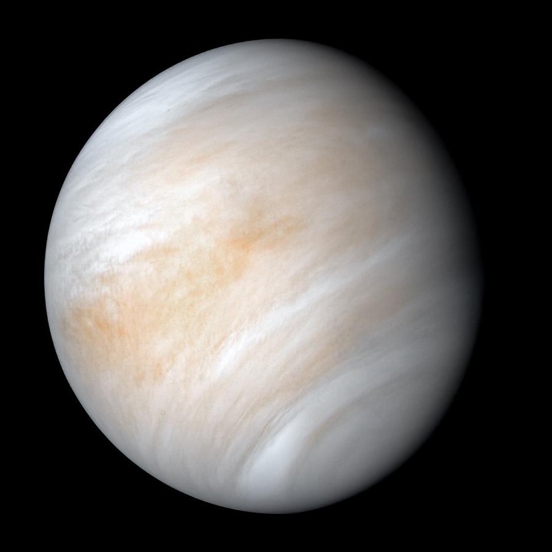

Vênus é o segundo planeta a partir do Sol e o que chega mais perto da Terra. Tem quase o mesmo tamanho do nosso planeta, por isso é chamado de "planeta irmão", mas é coberto por nuvens espessas que aprisionam o calor e transformam sua superfície em um verdadeiro forno.
Cerca de 465 °C, quente o bastante para derreter chumbo
12.104 km de diâmetro
Entre 38 milhões e 261 milhões de km